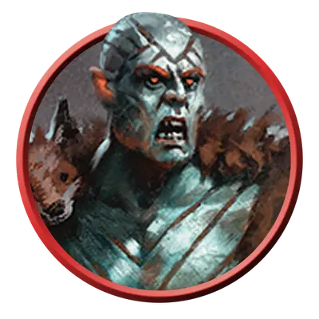

Предводитель берсерков
Berserker Commander
Средний или Маленький Гуманоид, Нейтральный

Класс Защиты 16 Инициатива +5 (15)
Хиты 136 (16к8 + 64)
Скорость 40 футов
| мод | спас | ||
|---|---|---|---|
| СИЛ | 19 | +4 | +7 |
| ЛОВ | 14 | +2 | +2 |
| ТЕЛ | 19 | +4 | +7 |
| мод | спас | ||
|---|---|---|---|
| ИНТ | 10 | +0 | +0 |
| МДР | 14 | +2 | +2 |
| ХАР | 9 | −1 | −1 |
Иммунитеты Испуганный, Очарованный
Чувства пассивное Восприятие 15
Языки Общий
Опасность 8 (3 900 опыта; БВ +3)
Особенности
Окровавленное бешенство. Пока предводитель Окровавлен, он совершает с Преимуществом броски атаки и спасброски.
Действия
Мультиатака. Предводитель совершает три атаки Двуручным топором или Метательным копьём в любой комбинации.
Двуручный топор. Бросок рукопашной атаки: +7, досягаемость 5 фт. Попадание: 10 (1к12 + 4) Рубящего урона плюс 10 (3к6) урона Звуком по цели или другому существу в пределах 5 футов от цели.
Пилум. Бросок рукопашной или дальнобойной атаки: +7, досягаемость 5 фт. или дистанция 30/120 фт. Попадание: 18 (4к6 + 4) Колющего урона, и Скорость цели снижается на 5 футов до начала следующего хода берсерка.
Бонусные действия
Бешеный натиск. Каждый союзник предводителя в пределах 30 футов от него может Реакцией переместиться на расстояние вплоть до половины своей Скорости, не Провоцируя атак. Сам предводитель также может переместиться на расстояние вплоть до своей Скорости, не Провоцируя атак.
Бонус мастерства +3
Среда обитания Любая
Сокровища Личные, Оружейные
Берсерки
Свирепые захватчики и пылкие воители
Охваченные азартом сражения берсерки превращаются в отчаянных захватчиков, гладиаторов и других неустрашимых воинов.
Отмеченные боевыми шрамами предводители берсерков заряжают своих воинов смертоносным фанатизмом и обращаются к первозданной магии, чтобы преумножить свою мощь.